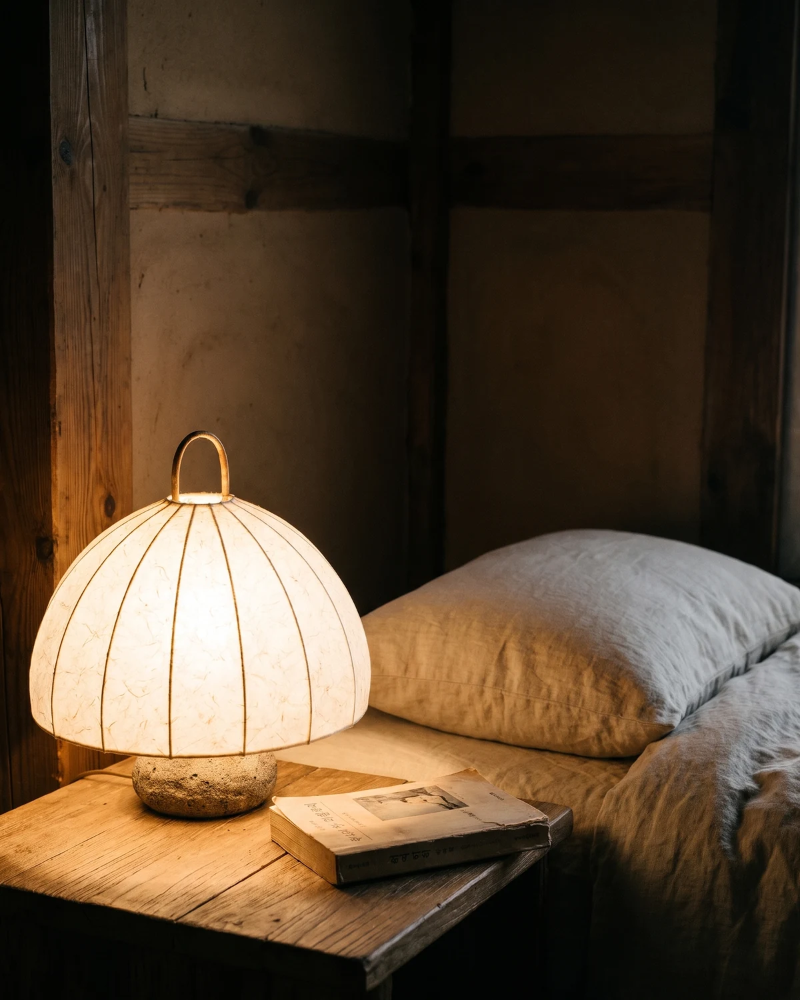

집에 들어오면 습관처럼 천장등부터 켜요. 방은 환해지지만, 하루의 피로도 그대로 드러나요. 오늘은 스위치를 누르는 대신 작은 조명 하나만 켜 보세요.
낮은 곳에 하나
책상이나 침대 옆처럼 눈높이보다 낮은 자리가 좋아요. 벽에서 한 뼘쯤 떨어뜨리면 빛이 벽을 타고 번져요. 한지를 지나 나온 빛은 방 전체를 밝히지 않고, 닿는 곳까지만 가만히 스며요.

어두운 곳은 어두운 대로
불빛이 닿지 않는 구석은 그대로 두어도 돼요. 밝기가 낮아지면 말소리도 조금 낮아지고, 방은 오히려 넓어 보여요. 차를 한 잔 두고, 퇴근 후 한 시간만 그렇게 지내 보세요.
오늘 밤은 불을 하나만 켜 보세요.